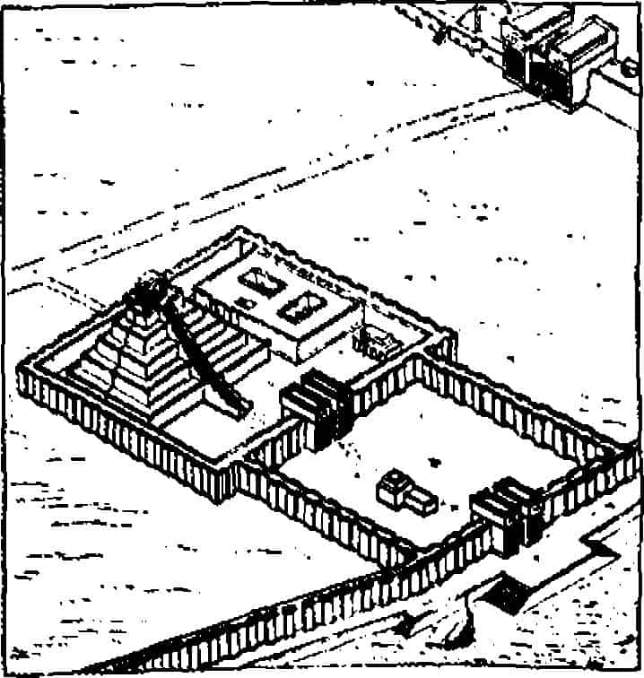

Nil’in kuzeyde deniz, doğu, batı ve güneyde çöllerle nerdeyse mükemmel korunmuş, doğallıkla savunulmuş vadisinde, hanedanlar çoğunlukla uzun süreler iktidarda kalmışlar ve -Asyalı karışık yabancılar sürüsü, savaş arabası ve bileşik yaylarıyla donanmış Hiksosların kuzeydoğu cephesini yararak MÖ y. 1670-1570 döneminde süren işgalleri dışında- dışarıdan müdahaleye uğramamışlardır. Kraliçe Hatşepsut (MÖ 1486-1468) “Re’ye dayanmadan yönetim kurmuşlardı ve kutsal emirlere göre hareket etmiyorlardı” diyor; tanrıların çekindiği bu insanlar uzaklaştırılmış ve toprak ayak izlerini artık silmişti.{184} Mısır’ın korunması için Asya içlerine, Suriye’ye kadar uzanan imparatorluk karakolları kurulmuş ve Nil insanları maata bağlı kendi eski uğraşlarına, barışlarına ve refahlarına dönerlerken, düşünce ve uygarlıklarının etkileri dışarıda yayılmıştı.
Güneybatı Asya’da, Yakındoğu’da, öte yandan farklı kökenlere sahip ırkların ve geleneklerin sürekli kaynaşması devam ediyordu, savaş, kıyım, genel düzensizlik ve karşılıklı hakaret kargaşası, ancak küçük krallarca bir düzen altına alınmaya çalışılıyordu; bu krallar da tahtlarında, kraliyet savaşına katılan sıradan insandan daha güvenlikli değillerdi, Tanrı’nın dünyasının tekinliğine inanmanın veya güvenmenin yolu kalmamıştı. Ayrıca, iki kutsal ırmağın kendileri de, bulutların gelip gitmesi gibi güvenilir değildi. Nil’in yıllık, düzenli ve arzulanan yükselmeleri halkın olağan umut ve beklentileriyle tam uyum içindeydi. İsis’in güzel yıldızı Sothis’in (Sirius) ufkun aşağısında yıllık görünme zamanında, çok güvenilir bir işaret almış oluyorlardı ve kozmosun tanrıça efendisinin doğru düzeninin programı onlara verilmiş oluyordu. Oysa Dicle ve Fırat’ın ani taşkınları ve kabarmaları elbette güvenilir ve elverişli bir ortam oluşturmuyordu ve sert bölgedeki her şey gibi korkunçtu. Bunun sonucu olarak geleceği ve yaratılış düzenini bilmekten oluşan rahiplik sanatı, Mezopotamya’da Mısır’daki benzerine göre çok daha somut özelliklerin daha sabit gözlemine gereksinim duyuyordu ve bu zorunluluğun sonucu olarak kutsallaştırmanın sayısız, üstünde çok çalışılmış teknikleri geliştirilmişti. Örnek olarak hepatoskopi (kutsal hayvanların karaciğerlerini inceleme), oleografi (suya dökülen yağın çıkarttığı şekilleri okuma), astroskopi (yıldızların, gezegenlerin, ayın ve güneşin, henüz astroloji kadar gelişkin olmayan, gözle görünür hareketlerinin izlenerek zodyaktaki karşılıklı yerlerine göre hüküm çıkartma); ayrıca meteorolojik koşulların (bulut oluşumları, yıldırım ve şimşek biçimleri, yağmurlar, rüzgârlar, depremler vb.) değerlendirilmesi, hayvanların davranışlarının değerlendirilmesi, kuşların uçuşlarının, önemli doğumların değerlendirilmesi vb.{185} Ve bütün Güneybatı Asya’da toplumsal ve siyasal kargaşanın zaman içinde gittikçe artan güçte hükümetlerin ve medeni hukuk düzeninin kurulmasına yol açması gibi, doğanın yakından izlenmesi zorunluluğu da -özellikle astronomide- sistematik bilimin başlaması sonucunu vermiştir.
Böylece, Afrika’da Nil vadisinin korunmalı vahalarında MÖ y. 2850’den Hıristiyanlığın doğuşuna kadar arkaik uygarlığın saf biçimini sürdürüp devam ettirebilmesi gibi, daha MÖ y. 4500’ler gibi çok erken tarihlerde en eski neolitik kültür biçimlerinin ve bin yıl kadar sonra ilk önemli şehir devletlerinin göründüğü Güneybatı Asya’da, biçimini değil, fakat o zamana kadarki bütün uygarlıkların ana gelişim merkezi olarak önderliğini korumuştur. Ta ki, MÖ 331’de Avrupalı parlak genç Büyük İskender (MÖ 356-323) Krallar Kralı III. Dara’nın (h. MÖ 336-330) ordusunu dağıtana ve modern çağın Avrupalı Batı önderliğindeki kültürler arası uzlaşmasının sanki ilk adımını atana kadar.

Şekil 13
Nippur zigguratı (sağlam tasarımı): Irak, MÖ y. 2000
Dünyanın bilinen en eski mezar külliyelerinin Brak, Khafa- jah, Uqair, Obeid, Uruk ve Eridu’da, genel olarak MÖ y. 4000-3500 yılları arasına ait olanların biçimleri üstünde durduk. İzleyen bin yıl içinde Mezopotamya’da kule gibi, merdiven teraslı yeni bir biçim, zigguratlar ortaya çıktı (Şekil 13). Dört yöne bakan dörtgen taban üstünde, ruhbana ait birçok ek idare binası bulunan geniş bir alanda yükselir. Biçimlendirilmiş çamur ve tuğladan yapılan simgesel dağın tepesinde kentin baştanrısı için döşenmiş bir saray vardır. Çünkü bu dönemde her Mezopotamya şehir devletinin dünyayı yöneten tanrılardan birinin dünyevi mülkü olduğu düşünülürdü. Ur, Ay tanrısı Nannar’ın, yakınlarındaki Obeid, gördüğümüz gibi süt tanrıçası Ninhursag'ın yeriydi. İran Körfezi’ndeki Eridu kenti, su tanrısı Enki veya Ea’nın mülküydü. Ea’nın tapınağı yüz seksen metreye yüz metre bir tabana oturuyordu ve herhalde ikiden çok katı yoktu (yüzyıllar eski boyunun anlaşılmasına olanak vermeyecek biçimde tapınağı aşındırmış). Belki de teras üstünde ev gibi tapınak kurma biçiminin sonradan taklit edilen en eski örneklerinden biriydi. Nippur’da, kuzeybatıya 110 mil gidildiğinde, hava tanrısı Enlil’in kocaman tapınağıyla karşılaşırız. Eski Sümer’in gücünün doruğunda olduğu dönem boyunca (MÖ y. 3500-2050) Enlil, Yunan Olimpos tanrılarının Zeus’u gibiydi, panteon’un primus inter paresi{186}. Bu yöre 1889-1890, 1890-1891, 1893-1896 ve 1896-1900 yıllarında Pennsylvania Üniversitesi’nin gönderdiği heyetlerce birçok sıkıntılı keşif gezileriyle kazılmıştır. Araplar, hastalıklar, acemi yöntemler ve her şeyin zorlamasıyla karşılaşan cesur kürekçiler otuz bin civarında çivi yazısı tablet çıkarmayı başarmışlardır.{187} Fakat ziggurat konusundaki çözümlemelerinde işi yüzlerine gözlerine bulaştırmalardır.{188} Bugün tarihin çok uzun devrelerini atlatmış olan zigguratın biçim ve boyutları hakkında bilim adamları arasında görüş birliği yoktur.{189} Fakat ırmağa bakan geniş bir ön avlu ve geniş bir arka avlu bulunduğu, bu avluda beş, belki üç katlı kocaman bir zigguratın önden, tepedeki tapınağa kadar yükselen merdiveni olduğu kesindir. Her şey köşelerin yön göstermesine göre ayarlanmıştır. Ayrıca, zemin katta çok geniş bir başka alt tapınak daha olduğu anlaşılmaktadır.
Biri altla biri tepede iki tapınak formülünün en eski dönemlerden beri zigguratların temel planını oluşturduğu görünüyor. Bu uygulamanın mitolojik nedeni mimar W. Andrae tarafından duyarlı biçimde incelenmiştir.{190} Çok kısaca, önerisine göre, ilah tepedeki tapınakta barınmaktadır ve aşağıdakinde ortaya çıkmaktadır. Yukarıda döşenmiş daireler yalnızca baştanrı veya tanrıçayı rahat ettirmek için değil, aynı zamanda kutsal müminler çevresi de düşünülerek yapılmıştır. Zamanı belirli festival günlerinde ilah aşağıdaki tapınakta ortaya çıkar, halkın tapınmasını kabul eder ve nimetler dağıtır. Öyle ki, ziggurat bir yandan ilahın dünyadaki kentine inmesi için, bir yandan da kent halkının tanrılarına ulaşmaları ve ondan istekte bulunmaları için bir araç gibidir.
Mezopotamya kralları artık, Mısır’dakiler gibi, tanrı değildirler. Zaman içinde Batı’yla Doğu’nun din sistemleri arasındaki en belirleyici ayrım olacak olan tanrıyla insan dünyalarının birbirinden ayrılması gerçekleşmiştir. Kral artık tanrı-kral ve hatta doğru dürüst ‘kral’ (lugal) bile değildir, yalnızca gerçek kralın, yukarıdaki tanrının ‘rahibi’dir (patesi).
İnsanın yaratılışını anlatan, bu yeni ayrılma görüşünün bazı yönlerinin ifadesini bulduğu bir mitos var. Eridu tapınak kentinin tanrısı Enki veya Ea’nın çevrimini anlatıyor. E-a “su evinin tanrısı” ve Enki “toprak (ki) tanrıçanın efendisi (en)” demek. Simgesel hayvanının ön kısmı keçi gibi, ama gövdesi balık. Bu biçim gene de Capricorn (Oğlak burcu) kadar tanıdık, burçlardaki onuncu işaretin simgesi. Güneş bu burca kış gün dönümünde girer, yeniden doğum için. Enki su ritüellerindeki arınma tanrısıydı; bu ritüeller “vaftizm” veya “yıkanma evi” olarak biliniyordu.{191} Elbette son dönem Babil rahibi Berossos’un yaptıklarıyla bunlar arasında tesadüften daha fazla bir ilişki var. Berossos MÖ y. 280’de Yunanca yazıyordu ve ona verilen ad Oannes’di. Yunanca Ioannes, Latince Johannes, İbranice Yohanan. İngilizce John: Vaftizci Yahya ve su aracılığıyla yeniden doğuş fikri (Yahya 3:5). Enki eşi tanrıça Ninhursag’la Dilmun olarak bilinen ada cennette yaşıyordu. Bu ada coğrafi olarak İran Körfezi’ndeki Bahreyn Adası olarak kabul edilir. Fakat mitolojik olarak ilkel denizde saf ve parlak, “yaşayanların ülkesi”dir:
Dilmun’da kuzgun ötmez,
Çaylak keskin çığlığını koyvermez,
Aslan öldürmez,
Kurt kuzuyu kapmaz
Oğlak yiyen vahşi köpek bilinmez.
Orada güvercinler başlarını sarkıtmazlar,
Gözü ağrıyan “gözüm ağrıyor” demez,
Başı ağrıyan “başım ağrıyor” demez,
Oranın yaşlı kadını “Ben yaşlı kadınım” demez,
Oranın yaşlı erkeği “Ben yaşlı erkeğim” demez.{192}
Dr. Samuel Noah Kramer Avrupa, Yakındoğu ve Amerika kütüphanelerindeki sayısız Sümer tableti üstündeki karşılaştırmalı çalışmasıyla, adı “ilkel deniz” olarak gösterilenin tanrıça Nammu’nun “Gökleri ve Yeri doğuran anne” olduğunu ortaya çıkarmıştır.{193} İkisinin bir arada temsili kozmik dağ biçimindedir, bu dağın tabanı su dolu uçurumların üstünde uçar, dünyanın tabanıdır. Tepesi ise göklerin doruğudur. Alt bölüm, Toprak (Ki) dişidir ve üst bölüm, Gök (An) erkektir. Yani yapıları daha önce öğrendiğimiz ikili temel varlıktır.
An, Toprak ve Gök’ü ayıran hava tanrısı Enlil’in babasıdır. Klasik Hesiodos mitosunda Gaia’nın (Toprak) ve Uranos’un (Gök), oğulları Kronos (Satürn) tarafından nasıl koparılıp ayrıldıklarını biliyoruz.{194} Panteonun sayısız tanrısı doğmuş ve bu tanrılar göklerdeki kentlerinde insanların dünyada tarlalarını sürüp geçinmeleri gibi yaşamışlardır.
Fakat aslında ihmalden kaynaklanan, ürünün yetmediği zaman gelmiştir. Ve Nammu, eski su ana, soyunun acıklı durumunu kavrayarak hepsinin en akıllısı Enki’yi aramıştır. Enki, Nammu’nun kendi uçurumunun efendisidir ve divanında derin uykuya dalmıştır. Nammu onu uyandırır. “Oğlum” der ve ona tanrıları bekleyen sıkıntıyı anlatır. “Divandan kalk ve zekânın eserini ortaya koy. Tanrılara işlerini görecek hizmetçiler yarat,” Ve akıllı Enki yerinden doğrulur, “Anne, bu elbette yapılabilir” der.
Enki, “Gidip dünyanın dibinden, su dolu uçurumumuzun hemen yüzeyinden bir avuç çamur al ve ona kalp biçimini ver. İyi ve muhteşem ustalara o çamura doğru yoğunluğu verdirteceğim. Ve o zaman gövdenin biçimini siz verirsiniz. Sizin üstünüzde toprak ana, eşim tanrıça doğuruyor olacak ve sekiz doğum tanrıçası ona yardım edecek. Yeni doğanın kaderini siz çizeceksiniz. Toprak ana onun üstündeki tanrıların imgesini belirleyecek. Ve o İnsan olacak.”
İş yapıldı. Enki’nin eşi toprak ana, su dolu uçurum tanrıçasının üstünde durdu, sekiz tanrıça doğumda ona yardım etti, çamur alındı, bebek annesinden ayrılır gibi ayrıldı. İyi ve muhteşem ustalar onu doğru yoğunluğa getirdiler ve Nammu önce kalbi yaptı sonra gövdeye ve koluna bacağına biçim verdi.
Enki bunu kutlamak için eşine ve annesine şölen verdi; bütün tanrıları davet etti. Çünkü tanrıların da hemen kavradığı gibi, büyük ve harika bir düşünceyi gerçekleştirmişti. Bir ırk yarattığı için onu tüm kalpleriyle kutladılar; bu ırk onlara köle olarak hizmet edecek, artık sonsuza kadar bol yağ ve kurban sağlayacak olan tarlalarında onlar için devamlı çalışacaktı. Her tanrının kendi mülkü olacaktı, mülkün başında da kiracı çiftçisi bulunacaktı. Dünyada kral, Enlil’in tanrılar arasındaki rolünü oynayacaktı. Onun yaşadığı yer, Enlil’in dünya dağının yeryüzündeki simgesi olacaktı. Kraliçesi, sevimli tanrıçası Ninlil, Venüs gezegenine karşılık gelecekti. Ve dünyada her şey gökteki gibi olacaktı. Yukarıdaki sarayda olduğu gibi, yeryüzündeki saray tapınakta da bir kapıcı ve baş uşak olacaktı; danışman, özel hizmetçi, teşrifatçı, arabacı, davulcu ve mızıka başı, yedi kızkardeş (nedimeler), zırhçılar ve saray muhafızları; ve tapınak surlarının dışında, tarlalarda ve çevresindeki köylerde kâhya, balıkhanelerin müfettişi, av bekçisi, muhafız ve -işte mucize!- binlerce çalışan serf olacaktı.
Çok parlak bir şölendi ve kısa sürede Enki de, karısı da çakırkeyif oldular. Bundan sonraki bölüm metni daha yakından izlemeye değecek kadar önemli;
Yürekleri kibirle doldu ve tanrıça tanrıya seslendi:
“İnsan gövdesi gerçekten ne kadar iyi veya kötü olabilir?” “içimden geçtiği gibi, gövdeyi iyi ya da kötü yapacağım.”
Ve Enki, büyük anlayışlılıkla yanıtladı:
“Elinden nasıl gövde çıkarsa çıksın, hepsine bir yer bulacağım.”
Tanrıça bir parça çamur aldı, altı kusurlu insan yaptı; bazılarının gövdelerinde önemli eksikler vardı, doğuramayan kadın, erkek veya kadınlık organları olmayan insanlar gibi... Fakat Enki, her biri için yer buluyordu:
Enki, doğuramayan kadını görünce,
Onun kaderini buyurdu: haremde kalmak.
Enki, erkek veya kadınlık organları olmayanı görünce,
Onun kaderini buyurdu: kralın önünde dikilmek...
Öteki yaratılanlar için çivi yazılı tablette verilen tanımları henüz kimse yorumlayabilmiş değil. Fakat oyun henüz sona ermemişti; Enki, oyunu kazandığını hissederek tanrıçayı yer değiştirmeleri için kışkırttı. Şimdi kendisi yaratacak, Tanrıça yer bulacaktı.
Karaciğeri ve kalbi büyük acılar içinde, gözleri hastalıklı, elleri titrek, ruhu uçmuş, “Doğum Günüm Çok Uzakta Kaldı” adını verdiği bir yaratık yaptı. Sonra tanrıçasına seslendi:
“Senin yarattıklarının her biri için, ben hemen yer buldum,
Şimdi sen benim bitirdiğim bu yaratık için yer bul,
Bu nereye gider?”
Tanrıça yaratığa yaklaştı ve onunla konuştu. Yanıt veremiyordu. Ona ekmek sundu. Uzanamıyordu. Oturamıyordu, ayakta duramıyordu, dizlerini de bükemiyordu. Tanrıça ona bir kader biçemedi.
Ve Enki daha başkalarını yarattı. Fakat burada da tablet anlaşılmaz oluyor. Anlaşılan hastalıklar, delilikler ve bunların her türlüsünü yaratan Enki, tanrıçasını fena halde köşeye sıkıştırmıştı. Bildiğimiz sonunda tanrıçanın bağırmaya başladığı:
“Kentim yıkıldı, evim battı;
Çocuklarım tutsak alındı.
Tanrıların dağ kentinden sürgün edildim:
Senin elinden bile kurtulamadım!
Sen de ne gökte ne yerde yaşayama.”
Ve Enki, insanlığın ana tanrıçası tarafından böyle öfkeyle bedduaya uğrayınca, gerçekten yeryüzünden uçuruma sürüldü. “Senin ağzından çıkan bir emri, kim değiştirebilir?” dedi. Ve bu satırda tablet kırılıyor.{195} Sarhoş partisi hiddetle kapanıyor. Fakat sonucu etkiliyor.
Finnegans Wake’de “İnsanın mimi, Tanrı’nın jesti vardır” diye okuyoruz.
Mezopotamya mitosunda birleşik gök-yer anne-baba dağı oğul Enlil tarafından ayrılırken, göğün (An) erkek ve yerin (Ki) dişi olmasına karşın, tamamen aynı konuyu işleyen Mısır mitosunda durumun bunun tersi olması üstünde durmalıyız. Mısır’da gök, önce (Narmer levhası döneminde) inek tanrıça Hathor’du, sonra (Piramit yazıtları döneminde) insan biçimli tanrıça Nut oldu; Nut dünyanın üstünde, el ve ayakları dünyada köprü kurmuş biçimde canlandırılır.
Piramit yazıtlarında tanrıça Nut için “parlak, büyük”,{196} “büyük koruyucu”,{197} “uzunsaçlı, sarkan göğüslü”,{198} “kolları indirilmeden döllenemez”{199} diye anlatılır. Ve yer tanrısı Geb, onun altında oturmaktadır. “Bir eli göğe ulaşır, öteki yere basar” diye okuyoruz.{200} İkisi Şu, hava tanrısı tarafından birbirlerinden ayrılmışlardı; Şu onların çocuğu değildi -oysa Enlil Anki’nin çocuğudur- fakat efendileriydi.{201} Yani bir yanda babayı yerinden edip anneyi kendine alan oğul için (“Sonra Enlil göğü taşıyıp götürdü”, “Sonra Enlil yeri taşıyıp götürdü”){202} en şiddetli Freudyen, Oedipus görevi verilirken, öteki sistemde ayrılık anne babanın isteği olarak anlatılmaktadır. Ayrıca, yaratılış imgesinin kabalığını da görüyoruz, insan yerin altından, su uçurumunun başladığı yerden alınan çamurdan yapılacaktır ve toprak tanrıça, deniz tanrıçanın üstünde durmaktadır, çamur ondan “bebek anneden ayrılır gibi” ayrılmıştır. Bu imge de, açık ki, insanoğlunun dışkılamayla yaratılmasıdır: Bir başka Freudyen bebeklik teması, Kitabı Mukaddes’te de sık sık yinelenen bir duygudur: “insan nedir ki, onu büyütesin ve yüreğin onunla meşgul olsun?” (Eyub 7: 17; Mezmurlar 8: 14; 144: 3; İbranilere 2: 5).
MÖ y. 3500’den kalma eski Sümer mühürlerine dönüp (Şekil 2 ve 3) bunlardaki kendini üreten ve tüketen, her şeyde içkin tanrı fikrini anımsayalım. Bu görüşün özünde Memphis’in Ptah görüşüyle aynı olduğu anlaşılıyor; Ptah “bütün tanrıların gövdesinde ve ağzında, bütün insanlarda, yabanıllarda, sürüngenlerde ve yaşayan her şeyde vardır”.{203} Şimdi MÖ y. 2500’den kalma iki Sümer mühürüne bakalım (Şekil 4 ve 5), bunlarda dişi figür erkeğin üstündedir ve bu yer değiştirmenin Mısır’ın Nut ve Geb’iyle uyum gösterdiği açıktır.
Buradan, daha eski, neolitik düzende kadının erkeğe üstün, kozmik annenin babadan yukarıda olduğu ve bir zaman gelince, bunu belirlemeye kalkışmamalıyız, Mezopotamya’da anne baba sırasının yer değiştirerek zıt biçimiyle belirlendiği anlaşılıyor. Bunun da psikolojik etkilerle birlikte ilginç felsefi ve mitolojik sonuçları olmalıdır. Örneğin Mısır toprağına gömülen biri Geb’in yeraltı dünyasında onun oğlu insan-tanrı Osiris’e dönüp onunla özdeşleşirken, Mezopotamya’da gömülen biri, babasına değil annesine dönecektir. Ve ana tanrıçanın, her yerde olduğu gibi hanedan devletinin ve patriarklığın güçlenmesiyle birlikle baba lehine gittikçe önemini yitirmesi Güneybatı Asya’da her yerden ileri götürülmüştür (Eski Ahit’te ana tanrıçanın izinin kalmadığı noktaya kadar varmıştır); üstün değer simgesinin ayrılması zaman içinde tüm Yakındoğu’nun karakteristik dinsel duygusu olmuştur. Ve yükselen zigguratlar yukarı ulaşma eğilimindeyken aynı zamanda gök güçlerine kopup ayrıldıkları insanoğlunun yanına rahmetle inmeleri için merdiven de oluşturmaktadırlar Zigguratlar ruhsal ayrılığın en eski işaretleridir.
An, Enlil, Enki ve Ninhursag
Karakafalı insanları yarattıktan sonra,
Topraktan bitkiler fışkırdı,
Hayvanlar, ovaların dört ayaklıları,
sanatkâr biçimde ortaya çıkarıldı:{204}
Ve bizim bildiğimiz veya MÖ 4. binde Sümerlerin bildikleri dünya, tam da değişmeden kalması arzu edilecek biçimiyle yaratıldı Çünkü eski mitolojide toplumun veya türlerin evrimine ilişkin bir yan yoktur. Başlangıçta ortaya çıkan formlar sonuna kadar öyle kalacaktır. Her sınıf varlığın ve her tür insanın erdemi tanrı tarafından belirlenen doğal yapısını sürdürmesidir: Mısır’da bunun maat olarak, Hindistan’da dharma ve Uzakdoğu’da tao olarak bilindiğini gördük; Sümer’de de me olarak adlandırılacaktı.
Dr. Kramer bir Sümer kil tabletinden, sistematik düşüncenin en eski dönemlerinde evrenin düzenini oluşturduğu kabul edilen erdemlerin (me’ler) kısmi listesini çıkarmıştır. Listeyi inceleyen çağdaş okur doğaya ve sağduyuya ilişkin kendi düşüncelerini bir yana koyarak, imgeleminde her kategoriyi kalıcıymış Tanrı’nın dünyasının yapısal öğelerinden biriymiş; doğrudan onun tasarımını yansıtıyormuş gibi canlandırmaya çalışsın; kategoriler şunlar: 1) üstün yöneticilik, 2) tanrısallık, 3) yüce ve ebedi taç, 4) krallık tahtı, 5) yüce saltanat asası, 6) saltanat nişanları, 7) yüce emanetler, 8) çobanlık, 9) krallık, 10) ebedi kraliçelik, 11) “kutsal hanım” olarak bilinen ruhani görev, 12) işip olarak bilinen ruhani görev, 13) lumah olarak bilinen ruhani görev, 14) gutug olarak bilinen ruhani görev, 15) gerçek, 16) öteki dünyaya inmek, 17) öteki dünyadan çıkmak, 18) kurgarru olarak bilinen harem görevi, 19) girbadara olarak bilinen harem görevi, 20) sa-gursag olarak bilinen harem görevi, 21) savaş bayrağı, 22) sel, 23) silahlar, 24) cinsel birleşme, 25) fahişelik, 26) hukuki mevzuat, 27) dilekçe, 28) sanat, 29) kült odası, 30) “gök hiyorodulü”{205} rolü, 31) gusilim denilen müzik aleti, 32) müzik, 33) yaşlılık, 34) kahramanlık, 35) iktidar, 36) düşmanlık, 37) dürüstlük, 38) kentlerin yıkılması, 39) ağlama, 40) kalbin sevinmesi, 41) sahtelik, 42) asi ülke, 43) iyilik, 44) adalet, 45) ahşap işçiliği sanatı, 46) metal işçiliği sanatı, 47) yazıcılık, 48) demircilik sanatı, 49) deri işçiliği sanatı, 50) inşaatçılık sanatı, 51) sepet örücülük sanatı, 52) zekâ, 53) dikkat, 54) kutsal arınma, 55) korku, 56) terör, 57) mücadele, 58) barış, 59) yorgunluk, 60) zafer, 61) danışma, 62) sıkıntılı yürek, 63) yargılama, 64) karar, 65) lilis denilen müzik aleti, 66) ub denilen müzik aleti, 67) mesi denilen müzik aleti, 68) ala denilen müzik aleti.{206}
MÖ 4. binde varlığın ve deneyimin sonsuza kadar sürecek diye saptanmış olan arketipleri bunlardı. Müziğe verilen önem de ayrıca dikkat çekici. Ur kral mezarlarında sati bölmelerinde bulunan, ölen ve dirilen ay boğası lapis lazuli sakallı Tammuz’u anımsayalım.{207} “Gök katlarının müziği” evrenin duyulamayan mırıltısıyken, müzik yoluyla duyulur hale gelir; müziğe uyum, toplumsal düzenin anlamıdır, ruhun uyumu da kendini onun akordunda keşfeder. Bu düşünce Konfüçyüs müziğinin de, Hint müziğinin de temelidir ve elbette Pythagoras inancının temeli de aynıydı. Bizim ortaçağımızın temel düşüncesi de buydu; keşişler melekler korosuyla uyum içinde sürekli, gayretle şarkı söylüyorlardı.
Yalnızca müzik de değil, bütün sanat -bütün Eski Çağ ve Doğu sanatı- bu mistisizme katılır. Biçimler biçiminin tezahürüdür bu. Dr. Ananda Coomaraswamy, “Avrupa sanatının doğal olarak zaman içinde bir an tanımladığı, bir eylemi veya ışık oyununu saptadığı yerde Doğu sanatı sürekli bir durumu yansıtır” diye yazıyor.{208} Doğu yaşamının her yönü, kipi, deneyimi için de böyle olduğunu eklemeli. Aynı şekilde, tüm ortaçağ boyunca tüm yaşam biçimleri Tanrının ışıyan zihninin idealarında (sabit türler) gerçekten mevcut olarak düşünüldü. Gerçekten çağdaş Batı düşüncesinin büyük bölümünde en azından pazar günleri bu antik düşüncenin varlığının sürdüğünü söyleyebiliriz. Burada yeğlenen bilimsel metin Charles Darwin’in Türlerin Kökeni değil, Tekvin Kitabı (MÖ 1. bin, sabit türler, Âdem’in kaburgası, Cennetteki Yılan, Nuh’un gemisi ve diğerleri).
Şair Dante, “Her şeyin kendi içinde bir düzeni vardır ve evreni Tanrı’ya benzeten form da budur” diye yazmıştı.{209} Aynı anlayışla Aquinolu Aziz Tommaso, “Tanrı, insanın eylemleriyle bir şey kazanıp yitirmez, fakat insan Tanrı tarafından oluşturulan düzeni görüp görmemesine göre, kendi adına Tanrı’dan bir şey alır ve ona bir şey sunar” der.{210} Ve bu düzen, MS 2. binde de, MÖ 4. binde de yerel toplumsal düzenin ve yürürlükle olan resmi anlayışın -isterse acımasız, canice yürürlükte olsun- insanca egemen kılınmasıdır (örnek olarak Mısır’ın Narmer levhasında iki ülkenin birleştirilmesi). Hepsi, bütün olarak maat, me, dharma, tao olarak ve Tanrı iradesinin arketipolojisi diye anlaşılmalıdır.
Eski Mezopotamya hakkında bütün bildiklerimizden, bazı rakamların kozmik düzen bilgisini anlamanın yolunu açtıkları yolunda kanıtlar elde ediyoruz. Daha MÖ 3200 gibi erken bir tarihte, yazılı tabletlerin ilk görünmesiyle ondalık ve altılık sistemler oluşmuştu. İkinci sistem soss’a (60) dayanmaktaydı, daireleri hâlâ bu sistemle ölçüp hesaplıyoruz. Altmış saniye bir dakika eder, altmış dakika bir derecedir, 360 derece daire. Gök ve yer dereceyle ölçülür. Ve zaman daireleri: 60 saniye bir dakikadır, 60 dakika bir saat. Mezopotamya yılı 360 gündü; zaman ve mekân daireleri uyum içindeydi, aynı rakam ilkesinin iki yönüydüler. Ve mekân dairesinin merkezinde kutsal zigguratın beş noktası bulunuyordu -dört köşenin dört açısı ve göğe yükselen zirve- kutsallık onun aracılığıyla dünyaya getirilmekteydi. Zaman dairesinde de, aynı biçimde, laik 360 günün yanında beş günlük ek festival haftası vardı; bu haftada eski yıl ölür, yenisi doğardı ve dünyadaki kutsallık ilkesi yenilenirdi. Ayrıca, bu günlerin yılla orantılı oluşu gibi, yıl da büyük yılla orantılıydı ve her eonun veya büyük yılın bitiminde bir tufan, kozmik parçalanma ve dönüş yaşanırdı.
Oxford’da bulunan (Weld-Blundell, 62) bir Sümer tabletinde, toplam 456.000 yıl egemenlik sürmüş olan on mitolojik kralın listesi verilir; gök katlarından insan kentlerine ilk krallığın indiği yıldan, Tufanın gelmesine kadar geçen süredir bu. İkinci bir tablet (Weld-Blundell, 144), bu krallardan yalnızca sekizinin adını verir, toplam 241.000 yıldır. Ve MÖ y. 280’de bilge Babil rahibi Berossos tarafından oluşturulan üçüncü bir liste (bu rahibi daha önce de anma fırsatını bulmuştuk) tekrar on kral sayar, ama yıl toplamı 432.000’dir. Bu çok ilginç bir toplam. Çünkü İzlanda’nın şiirsel Edda’larında Odin’in göksel savaş salonunun 540 kapısı olduğu anlatılmaktadır:
Beş yüz kırktır kapılarının toplamı.
Sanırım, Valhall’ın duvarlarının;
Her kapıdan sekiz yüz savaşçı çıkar
Kurtla savaşa gittiklerinde.{211}
Bu mitolojide “Kurtla savaş” tanrıların ve tanrı karşıtlarının her kozmik çember tamamlandığında (Wagner’in Halkası’nın Götterdämmerung’u) yinelenen savaşıdır ve her zaman tetikte bulunan okuyucu 540 kere 800’ün 432.000 yaptığını, Berossos’un Tufan öncesi krallar için verdiği süre, hemen fark etmiştir. Dahası, Hint Mahabharata’da ve Puranik dönemin daha sayısız metninde (MS y. 400 ve sonrası) dört dünyanın kozmik çemberi her 360 “insan yılı” için 12.000 “kutsal yıl”dır, 3.320.000 insan yılı eder. Bu çemberin bize düşen kısmı, sonuncusu ve en kötüsü, Kali Yuga denilen kısım, bu toplamın tam onda biridir.{212} Yani bu rakamı Avrupa’da, MS y. 1100’de, Hindistan'da MS y. 400’de ve Mezopotamya’da MÖ y. 300'de, kozmik eonun ölçüsü olarak buluyoruz.
Bu rakamla bağıntılı ilginç bir durum daha var. Bunun Birinci Dünya Savaşı sırasında farkına vardık. O sıralar çok çekişmeli bir tartışma başlamıştı, sonra bütünüyle sözü edilmez oldu. Şimdi bunu tekrar gündeme getirmek istiyorum, çünkü konunun çözüldüğünü sanmıyorum, yalnızca gündemden çıkartıldı. Tartışmaya göre, bahar gündönümünde (21 Mart) gök cisimleri hiçbir zaman geçen yıldaki konumlarının aynısına sahip değildir çünkü her yıl 50 saniyelik bir ara vardır; bu süre 72 yılda 1 dereceye varır (50 x 72 = 3600" = 60' = 1°) ve 2160 yılda bu 30 derece yapar, ki zodyakta bir burç demektir. Güneş bahar gündönümünde bugün, Balık burcunda (Pisces) durmaktadır, fakat İsa’nın zamanında Koç burcundaydı (Aries). Sümerlerin ilk dönemlerindeyse İkizler burcundaydı (Gemini). Bu zaman kayması “gündönümünün öne gelmesi” olarak bilinir ve ilk kez Asyalı bir Yunanlı, Bithinyalı Hipparkhos (MÖ y. 146-126) tarafından (Berossos’dan yüz elli yıl kadar sonra), “Gündönümü işaretleri üstüne” adlı yapıtında bildirilmiş olduğu kabul edilir. Fakat hesaplamalarında küçük bir yanlış yaparak yılda 45-46 saniye kadar fark bulmuştur.{213} Doğru hesaplamanın Kopernik zamanına kadar, MS y. 1526 yılını beklediği düşünülmektedir. Ama biz başladığımız Sümer hesaplamasını izlemeye devam edersek aşağıdakileri bulacağız.
Bir yılda geri kalma süresi, gördüğümüz gibi 50 saniyedir, 72 yılda 1 derece ve 2160 yılda 30 derece yapar. Yani, 25.920 yılda 360 derece yapacaktır, zodyakın tam bir dönüşü; buna “Büyük” veya “Platonik yıl” denilir. Eğer 25.920 60’a (bir soss) bölünürse 432 rakamı bulunur. İşte gene aynı rakam. Berossos tarafından Tufan öncesinin on kralına atfedilen süreyle zodyakın gündönümü çemberi arasında kesin bir ilişki vardır.
Babilliler gündönümünün gecikmesini Hipparkhos’un yanlış hesaplamasından yüzyıllar önce doğru hesaplamış olabilirler mi? Phidelphia Üniversite Müzesi’nden Profesör H. V. Hilprecht binlerce matematik hesap yapılmış tableti ortaya koyduktan sonra, 1966’da “Nippur ve Sippar tapınak kütüphanelerinden ve Asurbanipal kütüphanesinden çarpma ve bölme tabletleri 12.960.000’i temel alıyor” diye yazmıştı.{214} Ve işaret ettiği gibi, 12.960 x 2 = 25.920, yani bizim Büyük veya Platonik yılımızı veriyor. Alfred Jeremias, Hilprecht’in, Mezopotamya’da MÖ 3., belki 4. yılda gecikmenin hesaplandığı görüşünü kabul etmeye eğilimlidir: “Eğer bu yorum doğruysa ve rakam gerçekten gecikmeyle ilgiliyse” demektedir, “Hipparkhos’tan çok önce gecikme doğru olarak hesaplanmış ve daha sonra unutulmuş demektir.”{215} “Gökleri gözlemekte o kadar usta olan Babillilerin önceki gündönümüyle sonraki arasında fark olduğunu görememiş olmaları zaten inanılır şey değil... güneşin bahar gündönümündeki konumu gözlemlendiği anda yüzyıllar içinde gecikmenin oluştuğu da anlaşılmış olması gerekir... bir yılda fark yalnızca 50 saniyedir, fakat zaman uzadıkça gözden kaçması olanaksız daha uzun süreler haline gelir.”{216}
Fransız Asurbilimci V. Scheil ise, 1915’te, Profesör Hilprecht’in keşfinin, kesin astronomik gözlemin kanıtı olarak kabul edilemeyeceğini, altılı sistemin 60’ın dördüncü kuvveti olarak zaten bu rakamı vereceğini (60 x 60 x 60 x 60 = 12.960.000) söylemiştir.{217}
Şimdi altılı sisteme mi şaşmak gerekiyor, onu keşfeden Sümerlere mi? Eski takvime bağlı festival yılları saf matematikle hesaplanıyordu, doğal yollarla değil, 72 beş haftalık gün, 5 ilave edilen festival günü, 5 x 72 = 360. Fakat 360 x 72 = 25.920 verir; yani matematik yoluyla bulunan “büyük yıl”ın, gözleme dayanan astronomik “büyük yıl”la çakışması gerçekten çok hassas (mucizevi denilebilecek) bir rastlantının eseri olabilir.
Ne olursa olsun, Berossos’un gökten krallığın inmesiyle Tufan’ın başlaması arasındaki süre olarak rakamı ciddiye aldığı ortada.
Şimdi iki eski Sümer kral listesiyle çok daha sonraki Berossos listesini, iyi bir ölçü olması için Tekvin Kitabı’nın Tufan öncesi on kralını da katarak karşılaştıralım. Listeler şöyledir:
SÜMER W-B. 144 SÜMER W-B. 52
|
|
Kral |
Yıl |
Kral |
Yıl
|
|
| 1. |
Alilum |
28.800 |
|
Alilum |
67.200 |
| 2. |
Alagar |
36.000 |
|
Alaga |
72.000 |
| 3. |
Enmenluanna |
43.200 |
|
Kidunnuşakinkin |
72.000 |
| 4. |
Eumengalanna |
28.800 |
|
………….? |
21.600 |
| 5. |
Kutsal Dumuzi |
36.000 |
|
Kutsal Dumuzi |
28.800 |
| 6. |
Ensibzianna |
28.800 |
|
Enmenluanna |
21.600 |
| 7. |
Enmenduranna |
21.000 |
|
Euzibzianna |
36.000 |
| 8. |
Ubardudu |
18.600 |
|
Eumenduranna |
72.000 |
| 9. |
|
|
|
Arad-gin |
28.000 |
| 10. |
|
|
|
Ziusudra |
36.000 |
|
|
|
241.200 |
|
|
456.000 |
|
|
|
|
|
|
|
|
|
BEROSSOS
|
|
KİTABI MUKADDES (TEKVİN 5)1
|
||
| 1. |
Aloros |
36.000 |
|
Âdem |
130 |
| 2. |
Alaparos |
10.800 |
|
Şit |
105 |
| 3. |
Amelon |
46.800 |
|
Enoş |
90 |
| 4. |
Ammenon |
43.200 |
|
Kenan |
70 |
| 5. |
Megalaros |
64.800 |
|
Mahalel |
65 |
| 6. |
Daonos |
36.000 |
|
Yared |
162 |
| 7. |
Euedoraches |
64.800 |
|
Hanok |
65 |
| 8. |
Amempsinos |
36.000 |
|
Metuşelah |
187 |
| 9. |
Opartes |
28.800 |
|
Lamek |
182 |
| 10. |
Xisuthros |
64.800 |
|
Nuh |
600 |
|
|
|
432.000 |
|
|
1656 |
Dikkat çeken ilk nokta, Berossos’un eski iki listeden ve bu iki listenin birbirinden oldukça farklı olmasına karşın, bütün listelerin geçerli olduğuna ilişkin yeterli işaret görünmektedir; en azından iki bin yıllık bir süre boyunca kullanılmış olmaları gerekir. Atfedilen yılların oldukça farklı olmasına karşın, hepsinin aynı mitolojik düzene ait oldukları ve bugün hiç kimse tarafından gerçek tarihsel olaylardan söz ettiklerinin kabul edilemeyeceği de ortadadır. Bütün bunlar gerçek tarihle değil, efsaneyle karşı karşıya olduğumuzu, yani tarihin mitosun ifadesi olarak kullanıldığını göstermektedir.
Bu mitolojinin düş gibi ruhtan kendiliğinden ortaya çıktığı da söylenemez. Tipik neolitik tema ve belki etkisi varsa da, verimlilik kaygılarının eseri olduğu da bu mitolojideki ve ondan türeyen bütün mitolojilerdeki rakamlara verilen önemi açıklayamayacağından ileri sürülemez. Rakamlar büyük rakamlardır ve yalnızca iş olsun diye konulmuş değil, üstlerinde çalışılmış rakamlardır. Yasalara, temalara, ciddiye alınan matematik düzen içinde tuttukları yere göre özenle hesaplanmışlardır ve daha önce sözü edilmiş olan üç Mezopotamya listesinde de toplamlar aynı sayının çarpanlarıdır: 1200'ün, bu sayı bugüne kadar Hindistan’da kozmik çember içindeki “kutsal yıllar”ın toplamını ifade etmiştir: 1200 x 201 = 241.200; 1200 x 380 = 456.000; 1200 x 360 = 432.000.
Bütün bunlardan, kral listelerinin geliştirildiği bu mitolojinin temelinde tarih veya verimliliğin değil, bir tür düzenin yattığı anlaşılır: İnsanın ve dünyadaki yaşam ritminin ilişkisinde basitçe mevsimler, doğumun yıllık gizemleri, ölüm ve soyların türemesiyle değil, fakat bunların da ötesinde daha büyük, daha geniş çemberlerin, büyük yılların etkisiyle belirlenen, matematikle düzenlenmiş ve kaynağını astronomiden alan bir düzen vardır. Daha eski görece basit neolitik halk ve köyün verimlilik teması genişletilmiş, insanın evrendeki konumuyla ilgili tamamen yeni, seçkin, şiirsel bir görüş geliştirilmiştir; insan, tanrılar ve Tanrı’nın dünyasının kalıcı yapısal öğeleri olduğunu gördüğümüz bütün “erdemler”le birlikte evrenin bir organıdır.
Veya belki, bu bağlamda “Tanrı” diyemeyiz, çünkü bu mitolojide adı verilen ve varlığı tanınan tanrılar yalnızca işlevlerdir ve düzenin işlevleridir. Bu mitolojideki Tufan’ın da, özgün biçimiyle insanı cezalandırmak için gönderildiği düşünülmüş olamaz. Kozmik ritm düşüncesi kendiliğinden doğum ve dirilişi içerir; ceza veya önceden bilinemeyen bir tanrının iradesi gibi insansılaştırılmış bir yorumlama, ancak yüzeysel bir görüş olacaktır. Daha derindeki, kutsal temel Ur’un ürkütücü mezarlarında betimlenmiştir. Zamanı geldiğinde, gerçek anlamıyla yüzlerce soylu insan gövdelerini bu mezarlarda bırakmışlardır. Daha önce gördüğümüz gibi kozmik düzen (me). 1) üstün yöneticilik, 2)
tanrısallık vb.yle birlikte 22. kategori olarak sel’i de içermektedir; sel, rakamla daha derinden ve özüyle de kavranılmaktadır -Pithagoras’ın ve Ur harplerinin ortaya koyacağı gibi- müziğin uyum ve ritminde çok daha duyulabilir olacaktır; özellikle de şu sayı sisteminde:
| 60 |
– |
soss |
| 600 |
– |
ner |
| 3.600 |
– |
sar |
| 216.000 |
– |
büyük sar (60 x 3600) |
iki büyük sar 432.000’i, Berossos’un ilginç eon’unu verir.
Birçok bilim adamı eski kentlerin bulunduğu bölgede bütün uygarlığı tehdit eden yıkıcı selin gerçek olduğunu düşünmüş, hatta bazıları kazılarında bunun kanıtlarını bulduklarını bile ileri sürmüşlerdir. Fakat Mezopotamya şehir devletlerinde bulunan sel tabakası tarih olarak birbirlerini tutmamaktadır. Şuruppak{219} ve Uruk’dakiler{220} MÖ y. 3000’de, Jemdet Nasr döneminin sonlarında yaşanmışken, Ur’daki{221} Obeid döneminin sonlarında, Kiş’teki{222} iki veya üç yüzyıl sonra yaşanmıştır. Her biri (evrensel olmayı bırakın) Mezopotamya’yı kaplayan bir felaket bile olamamıştır, yalnızca yerel kalmıştır. Her şehir devletinin kendisinde yerel selin, bugünün Tufan mitolojisine yol açacak biçimde, kozmik bir olay olarak abartılmış olması olasılığı elbette vardır. Fakat konunun çağdaş inceleyicileri olarak bu tür yanlış değerlendirmelere kapılarak, kuyruğuna düşen darı tanesini görüp, “Kaçın! Kaçın! Dünya yıkılıyor” diye telaşlanan tavuk gibi davranmamalıyız.
Bilinen en eski tufan öyküsü, yaklaşık on yediye on iki santim boyutlarında pişirilmiş kil üstüne yazılı, Pennsylvania Üniversitesi’nde bulunan, fazlasıyla zarar görmüş bir tablettir. Binlerce benzeri gibi, 1895-1896 Nippur kazısında çıkartılmıştır. 1904’te “büyü 10673 (III Exp. Box 13)” diye kataloglanarak kaldırılmıştır. Ancak 1912’de, iki üç yıl Breasted’in büyüteci altında duran Memphis taşının, yaptığı gibi, -uzak yıldızın solgun ışığının, büyüklüğü ölçülemez Samanyolu olduğunun anlaşılması gibi- nasıl bir ufuk açtıysa Üniversite Müzesi’nden Profesör Arno Poebel tarafından incelenerek, birden MÖ’nin muhteşem üçüncü bin yılının kuşku duyulamayacak bir açıklamasını daha ortaya sermiştir.
Çivi yazısı metnin ilk cümleleri çok zarar görmüş durumdadır. Bir tanrı, belki tanrıça, Enlil ya da Enki veya tanrıça Nintu (Ninhursag’ın türevi) konuşmaktadır:
“insan soyum, onun felaketini ben...”
Bu Enlil'in tehdit eden sesi mi? Çünkü tufanı yollayan odur: “... onun felaketini ben yollayacağım!” Yoksa Enki veya tanrıçanın kurtuluşu tasarlayan sesi mi? “… onun felaketini ben durduracağım!” Bunu söyleyemiyoruz.
Sonraki satır da açık değil:
“Benim, Nintu’nun yaratıkları... ceğim...”{223}
Veya belki de şöyle:
“Ey Nintu, yarattıklarımı... ceğim...”
Ama gerisi görece daha okunaklı:
“İnsanları yerlerine yerleştireceğim;
Kentler... kuracaklar...
Gölgelerini [veya barınaklarını] huzur dolduracağım.
Tapınaklarımızın tuğlalarını temiz yerlere yatıracaklar.
Bizim... yerleri temiz yerlere kuracaklar.”{224}
Sonra delik deşik olmuş birkaç satır geliyor, sonra da 85. sayfada alıntılamış olduğum bölüm; sonra -II. sütunda- yıkılan beş kentin adı yazılmış: Eridu, Larak, Badtibira, Sippar ve Şuruppak.
III. Sütunda olacakları bilen tanrıçanın sesini duyuyoruz. Anılan ilk adı Nintu, fakat sonraki İnanna. Bu ayrı adlandırmalarda tek mi iki mi, tanrıça görmemiz gerektiği pek açık değil. Bu tür fazla adlandırmaların ayrı ayrı kişileştirilmeleri gerekir:
0... yer...
İnsanlar...
Fırtına...
O sırada Nintu doğum sancısı çeken kadın gibi bağırdı;
Saf İnanna halkı için ağladı.
Enki ta yüreğinden üzüldü.
An, Enlil, Enki ve Ninhursag...
Yer ve göğün tanrıları An ve Enlil’i yardıma çağırdılar.
Tanrılar arasında anlaşmazlık olduğu görülüyor, kozmik Tufan’ın bu metinde sakince, matematik hesapla kararlaştırılmış, olması kaçınılmaz bir olay olmadığı, bir tanrının gazabı sonucu olduğu ve öteki tanrılardan bir kısmının da buna göz yumdukları anlaşılıyor. Bu durum da kral listeleriyle bağlantı içindeki teolojiden tamamen farklı.
Yoksa bu metni aynı geleneğin popülerleştirilmiş, halk için uyarlanmış bir biçimi olarak mı almalıyız? Hindistan’da kutsal sevgi ve Tanrı korkusunun sayısız popüler külte uyarlandığını, bir ilahın kişiliği vurgulanırken, derinde nihai öğretinin mutlak kurallar olduğunu biliyoruz. Aynı biçimde Yunanlılar arasında masallardaki tanrılar kendi başlarına hareket ediyorlar ve irade sahibi görünürlerken, daha derinde kutsal kader, moira inancı vardır ve kaderle Zeus’un kendisi bile baş edemez. Kitabı Mukaddes’te de Tanrı şaşırır veya şaşırmış görünür, kendi yarattığından pişman olur, yeni kararlar alır -yani bir anlamda yaratıklarıyla diyaloğa girer- oysa bize onun ezeli ve ebedi, her yerde hazır ve nazır, sonsuz bilgi sahibi kadiri mutlak olduğu öğretilir. Sorun zıt çiftler sorunudur; kader ve özgür irade, adalet ve merhamet vb. Bunlar kendi içlerinde uzlaşamazlar ve onları kendi geleneğimizde bulduğumuzda, onları Tanrı’da uzlaşmış gibi görmeye eğilim gösteririz. Fakat başka geleneklerde gördüğümüzde, daha çok çelişkiden söz etme eğilimindeyizdir. Şu anda incelediğimiz konu yabancı bir geleneğe ait değil, kendi geleneğimizin eskide kalmış bir bölümü. Tekvin Kitabı’ndaki iki Semitik anlatımıyla, bize kadar gelmiş eski tufan masalının çok daha eski bir anlatımı olan Sümer biçimini inceliyoruz. Tekvin kitabındaki ‘Yehovacı’ anlatım, herhalde MÖ dokuzuncu yüzyıldan kalmadır. Burada Nuh’a “her yaşayan, bütün beden sahibi olanlardan, her türden ikişer olarak” gemiye alması söylenir (Tekvin 6:19). MÖ beşinci yüzyılın “Kâhince” anlatımında ise ‘‘her temiz hayvandan, erkek ve onun dişisi olarak yedişer ve temiz olmayan hayvanlardan, erkek ve onun dişisi olarak ikişer” alması söylenir (Tekvin 7:2). Dolayısıyla, Kitabı Mukaddes’teki uyuşmazlıklarda üstün bir bilgeliğin işaretlerini tanımayı öğrenenlere, bu bilgilerini aynı uyuşmazlık adına daha eski Sümer kaynakları için de kullanmalarını istemek zorundayız. Veya öbür yandan, geçen zamanla birlikte görüş farkı olup olmadığı sorulabilir, işlediğimiz konuda, daha eski, kişileştirilmiş bir düzene ait olmayan mitolojinin, daha sonraki daha insansılaştırılmış, kişileştirilmiş bir tanrının iradesine dönüştürülmesi söz konusudur.
Kitabı Mukaddes’te olduğu gibi, MÖ 1750’den kalma metinde de hayvanlarla dolu koca gemiyle kurtarılmaya değer tek iyi insan vardır (anlaşıldığına göre ailesiyle birlikte). Tufan öncesi uzun süre yaşayan kralların onuncu ve sonuncusudur (Kitabı Mukaddes’te krallar patriktir). Bu, Şuruppak şehir devletinin yaşlı, iyi kralı Ziusudra’dır. III. sütundan okuyoruz:
O sırada Ziusudra Kral’dı,... nın parlak rahibi
Kocaman bir... inşa etti
Alçakgönüllülükle, dirençle, saygıyla...
Her gün dirençle çalışarak, işe koşarak...
Daha önce hiç görülmemiş rüyalara uyarak...
Gök ve yer adına büyü yaparak...
Sütun burada kopuyor ve IV. sütundan devam ediyoruz. Kralın tanrıların arzusunu bilme çabası artık ödüllendirilmiştir; inşa ettiği kutsal yapının duvarı yanında dikilmektedir, bir ses, tanrı Enki'nin sesi duyulur:
...tanrılar bir duvar...
Yanında duran Ziusudra duydu:
Bu giriş kısmı, şimdi ses geliyor:
Duvarda, sol elimde, dur...
Duvarda, sana bir söz edeceğim.
Ey kutsal olanım, kulağını bana ver.
Tarafımızdan bir kasırga... gönderilecek,
İnsanoğlunun tohumunu yok etmek için...
Karar bu, tanrılar toplantısının sözü,
An ve Enlil’in emri...
Onun krallığı... onun yönetimi...
Gene kırık bölüm var. Son bölümde geminin inşası ve yüklenmesi tamamlanıyor olmalı; çünkü V. sütunun başında Tufan artık kopmuş; kısa, canlı mısralarla anlatılıyor:
Bütün fırtınalar bütün güçleriyle hep birden hücum ettiler.
Kasırga... onlarla birlikte patladı.
Yedi gün yedi gece boyunca
Kasırga ülkeyi kapladı,
Koca gemi rüzgârla büyük sularda sürüklendi,
Utu, güneş, göğe ve yere ışıklar saçarak göründü.
Ziusudra koca geminin bir penceresini açtı.
Güneş tanrısının, kahramanın, ırklarını hoca gemiye soktu.
Ziusudra, kral,
Kendini Ulu’nun önüne attı.
Kral: öküz kurban etti, koyun kurban etti...
Ve son olarak, VI. sütun: Kimin konuştuğunu tam olarak bilemiyoruz, fakat Güneş Tanrısı Utu olabilir; Ziusudra adına An ve Enlil’in karşısına çıkmıştır:
Göğün soluğuyla, yerin soluğuyla, onu büyülüyor musunuz…
olabilir... sizinle.
Göğün soluğuyla, yerin soluğuyla, Ey An ve Enlil,
büyü yapıyor musunuz, olsun ... sizinle.
Bitkiler fışkırdı yerden, boy attı.
Ziusudra, kral,
An ve Enlil’in önüne attı kendini.
Ve tanrılar kahramana daha önce okuduğumuz mutluluk ülkesinde ölümsüz yaşam verdiler:
Tanrı gibi bir yaşam bağışladılar ona.
Tanrı ruhu gibi bir ruh yarattılar onun için.
O zaman Ziusudra, kral,
“İnsan tohumunun koruyucusu” adını alarak,
Üstünde... dağ, Dilmun dağına yerleştirdiler onu...{225}
Tufan’ın bilinen en eski öyküsünün -Batı’da Nuh’un ve Hindistan’da Manu’nun Tufanı diye bilinir- Sümer anlatımının tarihi MÖ y. 1750’dir.{226} Profesör Poebel, “Metnimizin Sümerce biçemi, artık klasik döneminki değil” diyor.{227} Gerçekten, siyasal güç olarak Sümerler artık çökmüştür, uygarlığın önderliği Akad’ın çoğunluğu Sami kökenli halkına geçmiştir. Bunlar için Sümerce arkaik, öğrenilen bir dildir, aynı ortaçağların Latincesi gibi. III. Ur’un son Sümer dönemi bile, MÖ y. 2050-1950, yüzü geçmişe dönük, neo-Sümer restorasyon dönemidir; son üç kralı, Amar-Sin, Şu-Sin ve İbbi-Sin’in adları Semitik’tir.
Fiziki haritaya bir göz atıldığında, Mezopotamya'nın batısına doğru geniş bir çöl bulunduğu, kuzeyde Suriye’den Arabistan’ın en güney uçlarına kadar uzandığı görülecektir. En geride kalanı paleolitik dönemin sonları olmak üzere, tarihin sayısız Semitik kabilesi bu çölden çıkmıştır. Şöyle sayılabilir:
1. Akadlılar, Sümer ülkesini fethettiler ve krallığı Agade kentine taşıdılar (Sargon’un Agade’si), MÖ y. 2350 (Ur’un restorasyon dönemi bundan sonradır, MÖ y. 2050-1950);
2. Amorites Babilliler, Sümer ve Akad’a coup de grace{228} indirdiler, MÖ y. 1850 (Hammurabi, MÖ y, 1700);
3. Sonraki Amoritler, antik Eriha kentini fethettiler, MÖ y. 1450 ve orayı yıkıntılar içinde bıraktılar;
4. Kenaniler, onların peşinden Suriye ve Filistin’e geldiler;
5. Sahilin yakın akraba Fenikelileri;
6. İbraniler (Saul, MÖ y. 1010);
7. Asurlar, MÖ 1100’de Babil’i fethettiler ve güçlerinin doruğunda, Asurbanipal döneminde (MÖ 668-626) bütün Güneybatı Asya’ya hükmettiler;
8. Kaldeliler, MÖ 625’ten 550’ye kadar kısa süre efendi oldular;
9. Aramiler -tanımlanmaları pek net değil- dilleri Sina’dan Suriye’ye kadar yayılıyor ve İsa’dan hemen önceki ve sonraki yüzyıllarda ticaret dili olarak Hindistan’a kadar ulaşıyordu;
10. Son olarak Araplar, İslam’ın zaferiyle birlikte (MS yedinci yüzyıldan on altıncı yüzyıla kadar) arkaik dünyanın tarihinde en yaygın kültürel egemenliğin efendileri oldular.
Daha Sargon’un zaferlerinden önce, göçebe Semitik savaşçılar Sümer ülkesine akınlar düzenleyip burayı sık sık yağmalamaya başlamışlardı. Daha çok eski zamanlarda bile, hiyeratik devletlerin klasik egemenlik alanlarında, matematiksel yıldız gözleminin inceliklerinin bir şey ifade etmediği, sürü peşinde gezen göçebe çobanların ilkel dünyasının bu konuda katkıları görülmüştü. Dolayısıyla, Ziusudra’nın Tufanı’nda da Semitik etkilerin bulunup bulunmadığını söyleyemeyeceğiz. Utu’nun, Semitik güneş tanrısı Şamaş’ın eşdeğerinin aniden önem kazanması, biraz rahip ellerinin müdahale ettiğini gösterir gibi oluyor. Ve Tufan'ın, diyelim 432.000 yıllık eon onun doğal zamanının gelmesi yerine, gazaba kapılan bir tanrının işi olması düşüncesi ise, gerçekten daha sonraki, ikincil, görece daha basit bir beyin faaliyeti.
Böylelikle çeşitli kaynaklardan alınan kanıtlarla, Sümer mitolojisinin bilinen en eski metninin de temel, matematik esinli rahip görüşünden, dünyayı harekete geçiren, fakat en eski uygarlığın düzeyinden daha ilkel bir gücün, insanbiçimleştirici görüşünün içeri sızan görüşüyle saptırılmış olduğunu kuvvetle ileri sürmek olanaklı görülüyor. Öyle ki, bize kadar kalan mitoslar, geleneğin bir damlasını veya yozlaşmışını temsil ediyor; bu da, ya bütün popülerleştirmelerde olduğu gibi bilerek yapılmıştır ya da somut temelini yitirmiş olduğundan bilmeyerek olmuştur. İkinci durumun söz konusu olması burada daha olası, çünkü Profesör Poebel’in bildirdiği gibi Sümer metninin biçemi, “artık klasik döneminki değil”. Daha sonraki, aynı soyun değişime uğramış türevi.
Bilinen en eski, gerçekte son dönem Sümer belgelerindeki, gene de açıkça görülen matematik kanıtlarının bu incelikle geliştirilmiş (o zamandan beri insanoğlu tarafından yeniden biçimlendirilmiş) geleneğin oluşum döneminde çok güçlü bir düzen anlayışı vardır. Bu, insan biçimli ilk varlığın yarattığı bir şey değildir, evrenin yaratıcı, başlangıcı olmayan ve yapılanması çok uzun süre alan kendi ritmidir. Uygarlığa biçimini veren rüzgârı estiren de odur. Dahası, mucize olarak kimsenin yorumlamamış olduğunu gördüğüm gibi, Sümer’de MÖ y. 3200’lerden itibaren başlamış olan aritmetik, tesadüf olarak veya bilinçli yapılan hesaplamayla göksel düzenin kendini açığa vuruş biçimiyle çakışır. Bütün arkaik Doğu dünyası, daha eski ilkel ve daha sonraki Batı’nın aksine, bu mucizeyle mutlak olarak büyülenmiştir. Rakamın gücü yalın gerçekten çok daha büyüktür. Çünkü gerçeğin üreticisi olarak görülmüştür. İnsanlıktan daha önemlidir, çünkü insanlığın kendi gizli uyum ve mantığını kavrayıp tanıdığı örgütleyici ilke odur. Tanrılardan çok daha büyük önem taşımaktadır çünkü çemberlerin, daha büyük çemberlerin, hatta daha da büyüklerinin, sonsuza kadar genişleyen çemberlerin ihtişamında tanrıların varoluş ve yok oluşlarını belirleyen yasa odur. Ve varoluştan da büyüktür, çünkü varoluş yasası onun döl yatağında bulunmaktadır.
Böylece matematik, kültürel değişimin bu önemli anında, daha önce bilinen biyolojik ölüm ve üreme gizemiyle karşılaşmış ve ikisi birleşmiştir. Rahmin ayla uyum gösteren ritmi daha önce gök ve yer arasındaki karşılıklılık koşullarına dikkati çekmişti. Matematik yasa şimdi ikisini birleştiriyordu. Bu nedenle bütün bu mitolojilerdeki maat, me, dharma ve tao, Yunan geleneğinde moira olan ilkeleri, mitolojik olarak dişi kabul edilir ve öyle temsil edilir. Huşu veren, ihtişamlı gizemiyle Yüce Ana, arkaik dünyanın tüm ritüel söylemine biçim ve desteğiyle egemen olur. Narmer festival levhasının dört yüzünde gördüğümüz inek tanrıça Hathor ve ilk Sümer krallarının ebesi olan süthane tanrıçası inek Ninhursag yukarıdaki gökte, alttaki yerde, yerin altındaki sularda ve rahimde aynı şekilde mevcuttur. Ve üretici ritminin yasası bütün eski dünya için eski Sümer altılı aritmetiğinin, aynı anda uzay veya zamanın ölçüsünü kapsayan matematiğin birim ve çarpanlarında temsil edilmiştir.
Tekvin Kitabı bile, bunu gizlice içinde barındırır. Tanrı’nın halkına biçilen kaderde -Babil’in on kralıyla, on İbrani patrikinin karşılaştırmasının ortaya koyacağı gibi- içerilen matematik bunu gösterir. İlk bakışta, elbette Berossos’un yıllarıyla Kitabı Mukaddes’in yılları arasında büyük fark vardır. Birinde 432.000, öbüründe 1656. Fakat geçen yüzyılın tanınmış Yahudi bilim adamı, “Asur biliminin Nestor”u{229} Julius Oppert’in (1825-1906) “Tekvin’de Tarihler”{230} adlı büyüleyici çalışmasında ortaya koyduğu gibi, iki toplamın da ortak böleni 72’dir: 432.000; 72 = 6000 ve 1656; 72 = 23. ilişki 6000’e 23’tür. (72’nin gecikmenin bir dereceye ulaşması için geçmesi gereken yıl sayısı olduğunu anımsayalım). Dahası, Yahudi takviminde bir yıl 365 gündür, 23 yılda 5 artık yıl günü de eklenince 8400 gün olur veya 1200 yedi günlük hafta. Sonuncu rakam 72’yle çarpıldığında 1656 (23 x 72) yılda bulunan yedi günlük İbrani haftasının sayısı ortaya çıkar: 86.400 (1200 x 72). Öte yandan, Babil takviminde yıl beş günlük 72 haftadan oluşmuştur, yani bu tür hesaplamaların olağan yolu kullanılırsa, her Babil yılı bir gün sayılır ve 432.000 günde Babil beş gün haftalarının sayısı gene aynı sonucu verir 86.400 (432.000; 5). Ama 86.400 = 86.400. Burada takvim sistemlerinin tam karşılıklılığı açıkça görülüyor. Matematik düzen özgür irade öğretisinin karşıtı olduğuna göre, insan iki teolojinin hangi aşkın düşünceyle uzlaşabildiğini merak ediyor.
Profesör Oppert, makalesini 1877’de Sümerler hakkında bir şey bilinmezken yazdığında, İbrani sayılarının özgün olduğunu ve Berossos’unkilerin ‘bozulmuş’ olduğunu söylemişti;{231} şimdi tersinin doğru olduğu anlaşılıyor. Veya belki ‘bozulma’ diye bir şey yok, çünkü aslına bakılırsa bu her yöne çekilebilir öyküde somut gerçekler yok, yalnızca evrenin bir tür yorumlanışı söz konusu. Ve kim ötekilerin yoluna uymak ister? Mısır, Hindistan ve Çin, Girit, Yunanistan ve Roma, Germenler ve Keltler çekirdek Yakındoğu’nun uygarlaştırıcı meşruluğunu miras aldılar ve yeniden biçimlendirdiler; Tekvin Kitabı yazarları için de aynısı geçerliydi. Mitosun yeniden biçimlendirilmesi söz konusu olduğunda kullanılması gereken sözcük “bozulma” değil, “yeniden yaratma”dır.
Şimdi konumuzun tarihi boyunca Batı’yla Doğu’yu birbirinden ayıran bir paradoks ortaya çıkıyor. Kozmik görüş geri planda kalıp, tanrılar artık matematik düzenin yalnızca uygulayıcıları olmaktan çıkmaya başlıyorlar. Kendileri görece çok daha keyfi bir düzenin mutlak egemenleri ve özgür iradeli yaratıcıları olurlarken -babaca kişileştirme kapsamlı, kaprislere, gazaba, sevgiye ve tüm bu tarz duygulara açık bir düzeni olası kılar- onur ve olgunlukla, ruhsal umut ve güvenle belirlenmiş mistik incelik ortadan kaybolur. Öte yandan, kişisel, ahlaki, insancıllaştırıcı bir etken, duvarın öteki tarafında mutlak yokluğu söz konusu olan öğeler gündeme gelmeye başlar. Öte tarafta teklik, ruhun sükûnu -ve insancıllıktan uzaklık; bu tarafta gerilim, ikilik ve sürgün duygusu- fakat görevlinin yalın yüzü değil, özgür irade sahibi, kaderini değiştirebilme yeteneği olan ve bunun sorumluluğunu alan özerk birey, insanlık, bununla birlikte gelecek vardır; kozmos, metafizik ve geçmiş değil, iki yarımküreyi ortadan bölerek dünyadan göklere ve ötesine kadar Doğu ve Batı diye ayıran duvar budur.
Japon Zen Buddhist felsefeci Dr. Daisetz T. Suzuki, Batı ruhunun belirleyici özelliğini şöyle özetlemişti: “İnsan Tanrıya karşıdır. Doğa Tanrı’ya karşıdır ve İnsan ile Doğa birbirine karşıdır.” Oysa ona göre, tersine “Eğer dünyayı Tanrı yarattıysa, insanı onun parçası olarak yaratmıştır; insan doğaya aittir, organik olarak doğanın parçasıdır... Kendiliğinden olmanın ve insanların adetleriyle, inceltilmiş yapay ikiyüzlülükleriyle sınırlanmamanın kutsal bir yanı vardır, insana ait herhangi bir şeyle sınırlanmamış olmanın doğrudan ve taze bir tarafı vardır.”{232} Gerçekten de vardır. Fakat Batı'nın bütün ruhsal tarihi, MÖ y. 2350’den beri kendisinin insan tarafını bu yüceltilmiş doğaüstülükten ayırmaya yönelmiştir.
Eleştirel bir gayret, Sümer yaratılış mitosunda bile görülebilir durumdadır, insanın erdemi tanrıların zevki için köle olarak yaratılması diye tanımlanmaktadır. Böyle bir mitos yalnızca tapınmayı değil, fakat eleştiriyi de içerir ve böyle bir eleştiri Doğu’nun bitip Batı’nın doğduğu yerdir. Metafizik tremendum{233} ulu olan, değişmeyen gerçek karşısında duyulan huşu ve insan yargısının adı bilinmeyen, sonsuz, kişisel olmayan, fakat gene de her varlıkta, şeyde, ölümde bile bulunan gizeme tam olarak uyum göstermek, Doğu’da en kutsal kabul edilene karşı hissedilen duygular olmuştur. Ve bu boşluğa tam olarak kapılmanın getirdiği bilgi açısından, Batı zihninin basitçe erkek ve kadının dünyadaki kişisel işlerine bağlanması, yalnızca yaşamın meyvesini yitirmek olarak anlaşılabilir. Bu meyve, küçük kızın kocasıyla birlikte toprağa verilirken Ganj kıyısında bulduğu şeydir.{234}
Mısır’da psikolojik aşamalar dizisinin gittikçe geliştiğini (veya okuyucu yeğliyorsa bozulduğunu) gördük. Mitsel özdeşleşmeden, genleşme yoluyla mitsel bağlanmaya ve bu son aşamadan sonra Tanrı’ya atfedilen düzenin yapısında bulunmayan belirli insancıl incelik düzeyine varıldığını okuduk. Firavun -ulu “doğa çocuğu”- bundan sonra kutsallığın erdemini paylaştığı duygusuna zarar gelmeden insancıl erdeme bağlanmıştı. Fakat Mezopotamya’da, fazlasıyla şımartıcı kutsallık erdemine katılma duygusu dağılmıştır. Kral artık Ulu Tanrı, hatta Mısır’daki gibi iyi Tanrı bile değildir, Tanrı’nın kiracı çiftçisidir. Ve bu mitolojik kopma, doğanın ve insanın düzenlerini ikiye ayırmıştır; fakat insanı kendi akılcı yargısıyla hareket edecek cesareti bulabilecek kadar da dönüştürmemiştir. Sonuç olarak, anne babasının sevgisini kazanmak isteyen çocuğun çekeceği duygusal kaygıların acısı, mitsel bağlılığın kozmolojik kâbusuna çevrilmiştir. Kutsallığın desteğinin kazanılıp yitirilmesine göre değişkenlik gösteren ve sonuç olarak insanın doğuştan suçluluğuna ilişkin keskin, kemirgen bir duyguyla belirlenmiş kâbus.
Kiş kentinin Kralı Etena’yla ilgili önemli, oldukça tanınmış küçük bir destan var. İnsanın (veya en azından kralın) doğuştan kutsallığını içeren eski mitolojinin daha sonraki mutlak ayrılık, bağımlılık ve suç mitolojisine dönüşmesini o kadar canlı anlatır ki, eski ve sonraki ruhsal anlayışlar arasındaki geri dönülmez kopma noktasını saptamakta kilometre taşı olarak da değerlendirilebilir.
Tufan öncesi zamanlara ait sürelerini araştırmış olduğumuz eski Sümer kralları listesinde Etana adı, felaketten hemen sonraki hanedanın kralları arasında görünür; orada “çoban, göğe çıkan, bütün ülkeleri birleştiren, kral olan ve 1560 yıl hükmeden” diye anlatılır.{235} Bu adlandırma, bize göğe uçuşuna dair hiçbir Sümer metni kalmamış olmasına karşın, Etana’nın maceralarının eski kroniklerce bilindiğini göstermektedir; ayrıca, uçuşunda başarılı olduğu da anlaşılıyor. Efsane, kralın kutsal egemenliğini meşrulaştırmakta kullanılmış olmalı. Fakat uçuşuyla ilgili günümüze gelen daha sonraki Sami metinleri parçalarında -Babil veya Asur metinleri; çoğunluğu son Asur monarkı Asurbanipal’in (MÖ 668-635) dağıtılmış kütüphanesinden geliyor- tema bütünüyle tersine çevrilmiş, çıkartılan ders, arzunun erdem oluşu değil suç oluşuna dönüşmüş.
Küçük destanın giriş bölümü, günümüze kadar gelebilen biçimiyle, yüce kuş Güneş Kartalı’nın bile suç işlemesini anlatarak başlar. Kartal, ana öyküde dünyanın ilk astronotunun aracı olacaktır.
Kuş, komşusu Yılan’a, “Gel” der, “barış ve dostluk yemini edelim ve ona uymayanın üstüne Güneş Tanrısı Şamaş’ın laneti yağsın.”
Güneş Tanrısının önünde yemin ettiler ve yeminlerini lanetle mühürlediler. “Şamaş, Şamaş’ın sınırlarını aşana öldürücü
darbeler indiren eliyle, felaketin büyüğünü versin! Ölüler dağı ona girişini kapatsın!”
Sonra yavruları doğdu. Yılanınki bir karaağaç gölgesinde, kuşunki bir dağ doruğunda doğdu. Ve kuş yabani bir boğa veya eşek yakaladığında, yılan bundan yedi, çekildi ve yavruları yedi. Yılan yabani bir keçi veya antilop yakaladığında, ulu kartal yedi, çekildi ve yavruları yedi. Ta ki bir gün, kartal yavruları tüylenip de kötü düşünceler kuşun aklına düşünceye kadar.
“Aman” dedi, “yılanın yavrularını yiyeyim.”
Yavrularından biri, “Ey babacığım” dedi, “bunu yapma, Şamaş’ın ağına kurban olma.”
Kuş gene de harekete geçti, yılanın yavrularını yuttu, yuvasını yıktı, yılan baktığında yavruları yok olmuştu. Bunun üzerine Şamaş’a gitti.
“Elbette ey Şamaş, senin ağın tüm dünyayı tutar; senin tuzağın bütün gökyüzüdür! Ve senin ağından kim kaçabilir?” diye dua etti.
Güneş Tanrı “Hazırlan!” dedi, "Dağa çık! Saklanma yerin yabani boğa yeri olsun. Karnını yar, içine gir ve yuvanı orada kur. Gökteki bütün kuşlar, aralarında senin kartalın da inecek, kuşkusuz hepsi içeri girmeyi düşünecekler. Kanadından yakala. Kanatlarını ve pençelerini kopar. Onu yol, bir çukura at. Orada açlıktan ve susuzluktan ölsün.”
Yılan denileni yaptı ve çukurdaki mahvolmuş kuş Şamaş’a seslendi; “Efendim, benim sonum bu çukurda mı gelecek? Elbette cezanı hak ettim. Fakat bırak kartalını yaşasın, sonsuza kadar senin adını ulularım.”
Güneş Tanrı ona dedi: “Sen kötülük ettin, acıya neden oldun, tanrılar bunu yasaklamıştır. Yaptığın utanılacak şey; yemin de etmiştin. Ve gerçekten, şimdi üstüne yemininin lanetini salacağım. Sana kimi gönderirsem onu al ve bırak seni elinden tutup götürsün.”
Gelen adam çok yaşlı, dermansız çoban kral, Kiş kentinden Etana’ydı.
Bu yaşlı adam, “Ulu Efendim Şamaş” diye dua etmişti, “Sen koyunlarımın gücünü ve tüm ülkede kuzularımı tükettin. Ben gene de tanrılara saygı duydum, ölüleri düşündüm, rahiplerin kurbanlarını eksik ettirmedim. Emredersen, Ulu Efendim, biri benim için doğum bitkisini sağlasın. Doğum bitkisi bana ayan olsun. Onun meyvesini kopar Ulu Efendim ve bana bir çocuk bağışla.”
Güneş Tanrı, “Dağa çık” dedi, “Çukuru ara. İçine bak. Oradaki kuş sana doğum bitkisini gösterecek.”
Ve Etana denildiği gibi yaptı.
Parça parça tabletlerin burasında öykü bölünüyor. Masal tekrar başladığında yaşlı kral kartala binerek en aşağı gök katının kapısına varmış bile. Burada güneş, ay, fırtına ve Venüs gezegeni var. Kuş sürücüsüyle konuşuyor.
“Gel arkadaşım, seni daha da ötelere, Anu’nun [Sümerlerin An’ı] yüksek katlarına götüreyim. Göğsünü bana yasla. Ellerini kanatlarımın tüylerine, kollarını kanatlarımın omuzlarına göm.”
İki saat daha çıktılar. Kuş bağırdı: “Aşağıya bak arkadaşım, dünya nasıl görünüyor! Tuzlu denizi okyanus sarmış. Ortasındaki kara da dağ.”
İki saat daha çıktılar. Kuş bağırdı: “Aşağıya bak arkadaşım, dünya nasıl görünüyor? Tuzlu deniz karanın çevresinde genişçe bir şeritten ibaret.”
İki saat daha ve gene: “Aşağıya bak, arkadaşım, dünya nasıl görünüyor! Tuzlu deniz bahçıvanın sulama çukurundan daha büyük değil.”
Anu, Bel ve Ea’nın [Sümerlerin An, Enlil ve Ea’sı] yüksek kapısına ulaştılar... Etana ve kartalı...
Tablet gene kırılıyor. Arkasını çevirdiğimizde kuşu tanıyoruz:
“Gel, arkadaşım, seni daha da ötelere, Tanrıça İştar’ın [İnanna] katına götüreyim. Seni onun ayaklarının dibine bırakayım. Göğsünü bana yasla. Ellerini kanatlarımın tüylerine göm.”
İki saat daha ve kuş: “Aşağıya bak arkadaşım, dünya nasıl görünüyor? Kara dümdüz görünüyor, koca tuzlu deniz de avlu kadar.” dedi.
İki saat daha: “Aşağıya bak arkadaşım, dünya nasıl görünüyor? Kara küçük bir tümsek ve tuzlu deniz sepet kadar.”
İki saat daha çıktılar. Fakat Etana bu kez baktığında, aşağıda ne kara ne deniz gördü. “Aman arkadaşım, daha çıkma!” diye bağırdı ve o anda düştüler.
İki saat düştüler, iki saat daha...
Parça parça metin ve yazılar diplere doğru iyice dağılıyor. Bütün okunabilen birkaç kırık dökük satır:
Üçüncü kez iki saat...
Kartal düştü ve o...
Dünya’da parçalandı...
Kartal düştü ve o...
... kartal...
Kalan birkaç satırdan anlaşıldığına göre kralın dul eşi yas tutuyor ve gereksinim duyulduğu anda kralın ruhuna sesleniliyor.{236}
Profesör Morris Jastrow, yarım yüzyıl önce bu parçayı tartışırken, “özgün Etana masalında kralın tanrılar arasına yerleştirildiğini ileri sürmek için bütün nedenlere sahibiz” gözleminde bulunmuştu.
Şunları yazıyordu: “Bunu, ilk uçuşun başarısı gösteriyor. Amaç göklerin en yüksek katı Anu’ya ulaşmaktır ve bu amaca ulaşılmıştır, ikinci uçuş, açıkça birincisinin yinelenmesi ve anlatımdaki yanlışlar ilkinden yola çıkıldığını ortaya koyuyor.{237} Eski halk masallarının ve ünlü mitosların korunmasını ve son biçimleriyle bize kadar kalmasını borçlu olduğumuz Babil teolojisinin temel temalarından biri, insanın tanrılarla buluşamaması ve ölümden sonra kendini neyin beklediğini bulup öğrenememesidir. Ancak yeraltındaki kasvetli mağarada kıpırdayamadan kalacağı kesindir. İstisnalar olabilir, ama genel kural budur.”{238}
Profesör Jastrow, efsanenin bu anlatımında iki ayrı masalın birleştirildiğini de ayırt etmiştir: Birincisi, tanrıları tarafından terk edilen kral ve kente, ikincisi dostluk kuran kartala ve yılana aittir. Birincisinde, ona göre, toplumun iyiliği ancak verimlilik tanrı ve tanrıçasının -yani İştar (İnanna) ve Bel (Enlil)- doğrudan müdahalesiyle sağlanabilecektir ve Etana Şamaş’a (belki özgün halinde İştar’a) doğum bitkisini görmek için başvurduktan sonra sürüsü yeniden gençleşebilecektir.{239}
Hayvan masalı, öte yandan, peşine ahlak dersi eklenmiş halk öyküsüdür. Eğer iki parça birleştiğinde Etana amacına erişememişse, bu, son dönem Babil ruhuyla uyum içinde olduğunu gösterir.
“İştar’ın önüne çıkartılmak yerine dünyaya düşürülüyor. Hedefine yaklaşıyormuş gibi görünürken kartal sırtında Etena’yla birlikle seyahat etmiş olduğu üç iki saat boyunca koca uzaydan aşağı düşüyor...”{240} Ve macera başarılamamış oluyor.
Jastrow’un çıkardığı sonuç şöyle: “Birleştirilen iki masalın ders belki iki ders vermesi amaçlanmış: a) Şamaş’ın kuralları büyük cezalara uğramadan çiğnenemez ve ikincisi, daha önemlisi, b) insan tanrılar gibi ölümsüz olamaz. Babilli teologların Gılgamış destanında ekleyip yükledikleri ders de buydu... Bana öyle geliyor ki, Elana mitosunun da aldığı son biçimle vermesini istedikleri ders aynısı.”{241}
Böylece, daha 1910’da konunun önde gelen araştırıcılarından birinin, insanın tanrılardan mutlak kopuşu zihniyetinin gerçekte Sümer’e değil, fakat daha sonraki Sami düşüncesine ait olduğu görüşüne vardığını görüyoruz. Fakat bu görüş, aynı zamanda, hybris görüşüyle Yunanlılarda da vardı ve trajedinin temel ilkesini oluşturuyordu. Hıristiyan Cennetten Kovulma ve Kefaret, Ağaç ve Haç mitosları da aynı anlayışın ürünü. Gerçekten Batı edebiyatında böyle insanüstü öykülerin başarısızlıkla sonuçlanması çok tipiktir. Oysa Doğu da böyle değildir: Buddha efsanesinde olduğu gibi, ölümsüzlük kazanmak için yola çıkan hemen hemen her zaman başarır.
Batı’da trajedi duygusu o kadar güçlüdür ki, ‘katastrofi’ sözcüğü (Yunanca kata “aşağı” ve strophein “dönmek”) temelde dramanın ister üzücü olsun ister olmasın son olayı, sonucu demekken bizim için günlük kullanımda yalnızca felaket ifade eder olmuştur. Ve en yüce dinsel simgemiz de haça gerilmedir, Tanrı’nın kendisini, gövdesini ölümün gücüne teslim ettiği trajik anda gösterir.
Bu demektir ki, bizim kahraman kavramımız, gerçek, belirli bir bireydir, gerçekten ölümlüdür ve mahkûm edilmiştir. Doğu’da ise bütün mitolojinin gerçek kahramanı boş yere mücadele eden, ampirik kişilik değildir, yeniden yaşam bulan, yeni yaşamlara geçen kişiliktir. Tanınmış bir anlatımı alıntılarsak, “asla doğmamıştır, asla ölmez, hiçbir zaman olmamıştır ve hiçbir zaman son bulmayacaktır. Doğmamış, sonsuz, değişmeyen ezeli varlık, gövdesi öldüğünde ölmez.”{242}
Etana’nın ve kartalının düşüşü Doğulu değil Batılı bir “ka- tastrofi”dir. Bu efsaneyle masumluğun sonu gelmiş, iyilik ve kötülük bilgisini veren meyvenin tadına bakılarak insanın ilkeleri zaten mevcut bir psikolojiyle değil, büyük oranda ahlaki ve günlük düzenlerin arasında gelişmeci bir uyum kurmasını hedefleyen tarihsel bakış açısıyla kavrandığı ruh ve kader ülkesine doğru Batı kapısından yola çıkılmıştır.
Birçok bilim adamı, Profesör John A. Wilson gibi, en eski Mısır mezar duvarlarının ve kabartmalarının “gömme ve cenaze hizmetleri üstünde” durmayıp, “hasatın bolluğu, doğanın güzellikleri, av eğlenceleri, şölen ve oyunların heyecanıyla” ilgilendiklerini gözlemlemiştir. Genel izlenim, Profesörün belirttiği gibi, güvenli canlı ve neşelidir. “Kendine güven, iyimserlik ve yaşama şehveti sonsuza kadar sürecek yaşamın enerjik canlılığını doğuruyor.”{243}
Fakat MÖ 2. bin yılın ilk yüzyıllarından itibaren Mısır yazılarında, daha belirgin biçimde ise Mezopotamya’da yeni uyumsuzluk tonları görünmeye başlıyor. Örnek olarak MÖ y. 2000’den kalma bir papirüsteki ünlü “Münzevinin Ruhuyla Sohbeti”nin melankolisi böyle.
Ah, benim adımdan nefret ediliyor,
Ah, yaz gününde hava sıcakken
Kokan kuşlardan fazla.
Ah, benim adımdan nefret ediliyor,
Ah, bataklıklarda avlanan
Balıkçıların kokusundan fazla.
Ah, benim adımdan nefret ediliyor,
Ah, kocasına hakkında yalan söylenen
Kadından fazla.
Şimdi kimle konuşabilirim?
Kardeşler kötü,
Bugünün arkadaşları sevgi bilmiyor.
Şimdi kimle konuşabilirim?
Kibar insanlar yok oldu;
Her yerde kaba yüzlüler var.
Şimdi kimle konuşabilirim?
Bezginlikle yıldım,
İnanç sahibi tek arkadaşım yok.
Şimdi kimle konuşabilirim?
Ülkeyi kötülük kasıp kavuruyor;
Sonu da yok.
Bugün karşıma çıkan ölüm:
Hasta birinin iyileşmesi gibi.
Hastalıktan sonra bahçeye çıkmak gibi.
Bugün karşıma çıkan ölüm:
Mürrüsafi otunun güzel kokusu gibi,
İyi bir rüzgârda yelken altında olmak gibi.
Bugün karşıma çıkan ölüm:
Bir çayın yatağı gibi,
Bir adamın savaş kadırgasından evine dönüşü gibi.
Bugün karşıma çıkan ölüm:
Bir adamın nicedir özlediği evi gibi,
Yıllar süren tutsaklıktan sonra.
Ötede olan kişi{244}
Yaşayan tanrı gibi suçluyu yakalayacak,
Kötülere cezasını verecek.
Ötede olan kişi
Gök teknesinde dikilip,
Tapınaklara en seçkin kurbanları verdirtecek.
Ötede olan kişi
Re’ye dua etmekten söz ettiğinde
Reddedilemeyen bilge olacak.{245}
Bu giriş bölümünde Buddha’nın İlk Soylu Gerçeği “Yaşamın bütünü üzüntüdür” ve Aquinolunun “İnsanın bu yaşamda mutluluğu bulması olanaksızdır” yargısını bulmuyor muyuz?{246} Nietzsche’nin gözlemlediği gibi: “Hastalar ve ölenler: Gövdeyi ve yeryüzünü hor görenler, gökseli ve kurtarıcı kan damlalarını bulanlar onlardır... Gövdelerinden ve bu dünyadan öteye geçtiklerini kurdular bu iyilik bilmez kişiler. Oysa bu kendinden geçişlerinin çırpınmasını ve sevincini kime borçluydular? Gövdelerine ve bu dünyaya.”{247}
Bu bunalıma Büyük Tersine Dönüş adını vereceğim, çünkü ölüm artık yaşam mucizesinin devamı olarak görülmüyor, yaşam acısından kurtuluş yolu olarak görülüyor: “Hasta birinin iyileşmesi gibi”, “nicedir özlediği evi gibi".
Peki değerlerin böyle tersine dönmesine yol açan nedir?
Mısır’da VI. Hanedan’ın devrilmesinden sonra, MÖ y. 2190, toplumsal bir dağılma yaşanmıştır. Mezopotamya’da önce kentlerin kentlere karşı, sonra artan bir şiddetle, çöl ve bozkır aşiretlerinin (Samiler ve Aryanlar) uygarlık merkezlerine karşı giriştiği korkunç savaş çağı her yere yıkım getirmiştir.
“Agade Kralı Sargon” diye okuyoruz MÖ y. 2350’nin kraliyet kroniğinden, “İnanna’nın vekili, Kiş Kralı, Anu’nun paşişusu, Karaların Kralı, Enlil’in büyük işakkusu: Uruk kentini mahvetti ve duvarlarını yıktı. Uruk halkıyla savaştı ve onları bozguna uğrattı.
Uruk Kralı Lugal-zaggisi ile savaştı ve onu tutsak aldı ve prangalarla onu Enlil’in kapısına yolladı. Agadeli Sargon Ur’un adamıyla savaştı ve onu alt etti. Kentini mahvetti ve duvarlarını yıktı. E-Ninmar’ı mahvetti ve duvarlarını yıktı ve bütün topraklarını Lagaş’tan denize kadar mahvetti. Ve silahlarını denizde yıkadı. Umma’nın adamıyla savaştı ve onu alt etti ve kentini mahvetti ve duvarlarını yıktı. Karaların Kralı Sargon’a Enlil hiç hasım vermedi, yukarı denizden aşağı denize kadar Enlil toprakları ona boyun eğdirtti.”{248}
Dahası, Eyüp gibi, dinin kendisine yüklediğinden fazla din görevlerini yerine getiren bu sofu ruhların kaçınılmaz hayal kırıklıkları da söz konusudur. Babilli Eyüp olarak bilinen yaşlı, sofu kral Tabi-utul-Enlil’in (MÖ y. 1750) düştüğü durum budur. Feryat ve tanıklığının bir bölümünü buraya almaya değer:
Göz yuvarlarım kapandı, sürgülenmiş kilit gibi,
Kulaklarım sürgülendi, sağırınkiler gibi.
Kralken köleye döndüm,
Deli olduğumdan çevremdekiler bana eziyet ediyor.
Ulaşıp geçtiğim yaşam süresine karar veriyorlar;
Ne yana baksam kötülük üstüne kötülük görüyorum.
Sefillik artmış, adalet kalmamış,
Tanrıma seslendim, ama yüzünü göstermedi;
Tanrıçama dua ettim, başını çevirmedi.
Falcı rahip yoklayarak geleceği kararlaştıramaz,
Ölülerden haber getiren, fazla bakıp benim davamı çözemedi.
Kâhine başvurdum: Bir şey diyemedi.
Cinci rahip ritleriyle beni lanetten kurtarmayı başaramadı.
Böyle bir şey görülmemiştir:
Nereye başvursaın, işimde zorluk çıktı.
Sanki her zaman tanrının payını ayırmamışım gibi
Ve yemekte tanrıçaya dua etmemişim gibi,
Yüzümü indirip armağanımı vermemişim gibi.
Sanki ağzında devamlı dua ve niyaz olan biri değilim;
Tanrının gününü atlamışım, yeni ay şölenini kaçırmışım;
İhmalkâr davranmışım veya imgelerine karşı kötü
davranışım olmuş,
Halkına saygı ve korku öğretmemişim.
İlaha dua etmemişim veya tanrının yiyeceğini yemişim,
Tanrıçasını görmezden gelmişim ve içki dağıtmamışım
Efendisinin adını unutan zalim beni azarlıyor
Ve tanrısının kutsal adına saygı göstermiyor.
Yalnızca dua ve niyaz düşünürken;
Günlük işim dua, yasam kurbanken,
Tanrılara tapınma günü, yüreğimin neşesiyken,
Tanrıçaya adak günü benim için büyük nimetken,
Kraliyet duası - neşem buyken;
Onun kutlanması - sevincimken.
Ülkeme tanrının adının bekçiliğini öğrettim.
Halkıma tanrıçanın adına saygı göstermeyi aşıladım.
Tanrının yüceltilmesini kralın yüceltilmesiyle aynı yaptım,
Ve saraydan korkuyu halka öğrettim.
Bunların tanrıyı memnun edeceğini düşündüm…
Zavallı yaşlı adamın derdi bunlardı. Ve şimdi her zamanki, daha MÖ y. 1750’den beri bilinen yanıt geliyor:
Birine iyi görünen, tanrıya hoş gelmeyebilir,
Beğenmediği hoşuna gidebilir.
Gökteki tanrıların isteğini kim kavrayabilir?
Tanrının gizemli planını kim anlayabilir?
Ölümlüler tanrının işlerini nasıl öğrenebilir?
İnsan tanrının ululuğu karşısında pek önemsizdir.
Dün canlı olan insan bugün ölüdür;
Bir anda acıya boğulur, aniden yıkılır.
Bir gün şarkı söyleyip oynar;
Bir anda yas tutan biri gibi feryat eder.
İnsanın ruh durumu geceyle gündüz gibi değişir;
Aç olduklarında ceset gibidirler;
Doyduklarında kendilerini tanrıya eşit sanırlar;
İşler iyi gitti mi gevezelikleri göklere çıkar,
Sıkıntıya düştüler mi cehenneme düşmüş gibi homurdanırlar.
1500 yıl kadar sonra Eyüp’ün başına geleceği gibi, yaşlı kral Tabi-utul-Enlil tanrının acımasız sınavına tabi tutulsa da, tanrısı tarafından terk edilmemiştir. Eskisinden de büyük talihe konacaktır. Tanrısının mucizesinin ölçüsünü anlamak için, önce Tanrı’ya yakarışının devamını dinleyelim:
Berbat bir ifrit ininden çıktı,
Ve hastalığım sarılıktan beyazlığa döndü.
Boynuma vurdu, bütün omurgamı ezdi,
Kavak ağacı gibi uzun boyumu devirdi;
Bataklık bitkisi gibi sökülüp fırlatılıp atıldım.
Yiyeceğim acıdı - çürüdü.
Ve hastalık işini yaptı...
Yatağa düştüm, çıkmaya gücüm yok,
Evim hapishanem oldu.
Gövdemin bukağılarıymış gibi ellerimde güç kalmadı,
Uçları kesik kanatlar gibi ayaklarım uzanıyordu,
Bozgunum büyüktü, acım derin.
Bir kırbaç her yandan indi üstüme,
Ucu sivri mızrak deldi beni.
Ve avcı bütün gün izledi beni;
Bütün gece ara vermedi:
Eklemlerim anahtarla burkuluyordu,
Kollarım bacaklarım dağıldı, hareketsiz kaldı.
Geceyi ahırımda öküz gibi geçirdim,
Kendi dışkımda koyun gibi yattım.
Eklemlerimin hastalığı baş kâhini şaşırttı,
Falcı rahibe kehanetim açık olmadı;
Kâhin hastalığımın işaretlerini okuyamadı,
Falcı da dertlerimin sınırını bilemedi.
Ama yardımıma gelen tanrı olmadı, elimden tutan yoktu,
Hiçbir tanrıça yanıma gelip bana yakınlık duymadı.
Mezarım açılmıştı, gömülmem yakın,
Ölmeden yasım tutuluyordu.
Halkım çoktan “yazık” demişti bana.
Bunları duyunca düşmanımın yüzü aydınlanmıştı;
Haberler bildirilince gönlü açıldı,
Ve bütün ailem ilahımızın korumasına sığınınca
günün geldiğini anladım.
Ama sonra, her şey yitirilip yaşlı kral yatalak, inmeli, kör, sağır, yemekten kesilmiş ve acılardan tükenmiş, umutsuzluğun sınırına gelmişken, o ne? Bu erdemli acılar içindeki kişi terk edilmemişti, en karanlık saatte ilahından bir düş habercisi geldi -“taçla süslenmiş güçlü bir kahraman”- ve bütün alınanlar geri verildi.
Tanrı göksel dağın temeline güçlü bir fırtına yolladı,
Yerin derinliklerine sürdü onu
Ve berbat ifriti geri yeraltı uçurumlarına püskürttü...
Denizin kabarmasıyla sıtma nöbetini defetti.
Hastalığımın kökünü ot gibi söküp attı.
Huzurumu kaçıran kötü uykular duman gibi göklere uçup
ortalığı kararttı...
Ve gecenin peçesiyle örtülmüş olan gözlerimi.
Peçeyi uçurup götüren güçlü bir rüzgârla aydınlattı.
Sağırınkiler gibi kapatılıp sürgülenmiş olan kulaklarım,
Sağırlıklarını giderdi, işitmelerini sağladı.
Kapatılmış olan ağzım, zorlukla bir sözcük çıkarabiliyordum
Onu temizledi, bakır gibi parlattı.
Sıkıştırılıp ezilen kitlenmiş dişlerim,
Köklerine güç verip onları açtı.
Şişip kıpırdayamayan dilimden,
Örtüyü kaldırdı, konuşabilmeğe başladım.
Cesedinki gibi kapanan, boğulmuş gırtlağımı
İyileştirdi, göğsüm gene flüt gibi ses vermeye başladı...
Boynum ters çevrilmiş ve kırılmıştı;
Onu dikleştirdi ve sedir ağacı gibi uzattı.
Gövdeme müthiş bir güç verdi;
İfritten kurtarılmış biri gibi tırnaklarımı cilaladı.
Beni iskorbütten kurtardı, kaşıntımı giderdi...
Bütün gövdeme yeniden can verdi.
Yaşlı kral, inançlı birinin Lourdes{249} veya Ganj’a götürülmesi gibi, kutsal bir suya götürülmüş ve tanrının gücü onu hemen iyileştirmiştir;
Bütün rahatsızlıkları silip süpürerek gövdeye neşe saçtı.
Felçli gövde eski şaşaasını kazandı,
İnsanların yargılandığı ırmak kıyısında
Kölelik izleri silindi ve bukağılar çözüldü.
Çıkarılan ders de şu:
Tapınağa karşı günaha girenler benden duysunlar:
Beni yemek üzere olan aslanın çenesini Enlil tıkadı.
Avcımı burnundan Enlil yakaladı;
İfritin inini Enlil kuşattı.{250}
Böylece, ayı doğurup yok eden ölümsüz krallarla ilgili bunca mitostan, binlerce yıl süren ritüelleşmiş acımasızlıkları, insanı doğanın hayvan, bitki ve matematik düzenlerinin içinde gördükten sonra, kendi geçici imgelemiyle evrene yansıttığı ve sorgusuz kabul ettiği yasayı (maat, me) yargılamaya ilişkin bir nebze de olsa düşünmeye başladığı görülüyor. Yasanın MÖ 4. bin yıla kadar yalnız doğaüstü olarak kabul edilişini değil, sağduyu olarak da egemenliğini görüyoruz. Hiçlikten yaratılmaya ilişkin gelişmiş kutsal peri masalları, büyüsel söyleyişler, kutsal varlıkların mastürbasyon veya çiftleşmesi, tanrıların birbirlerine ve yaratıklarına oynadıkları oyunlar, tufanlar, yanlış yaratmalar ve benzerlerinden sonra, nihayet, daha önce pek gündemde olmayan bir konu, acı çekmeyle ilgili ahlaki sorun sahnenin ortasına çıkmıştır. Ve o zamandan beri hep orada kalmıştır.
İnsanın -veya belki bazı soylu kişilerin- duyarlılığı, eski kralların soğukkanlı sürüngen düzeyinden, daha sonraki, oğullarına “Tanrı önünde masumluğunuzu koruyun... kente karşı yumuşak olun, Tanrı sizi itaatiniz nedeniyle över... Gelecek için çalışmak iyidir...”{251} yazan düzeye geldiğinde, insanın iyiliğinin, sevgisinin, onurunun, adaletinin ve vicdanının Tanrınınkinden daha fazla olduğu ister istemez ortaya çıkmıştır. Ve bu gerçeğin yaşama geçişi güçlenip, Buddha’nın ikinci beliti -“Acıdan kurtulmak olanaklıdır”- gittikçe daha fazla zihinlere takıldıkça, mitolojinin en önemli konusu, ritüel ve insan bilgeliği, eski büyüsel doğa kültü alanından (gerçekte artık yavaş yavaş gelişen tarım teknolojisiyle zaten uyum göstermeye başlamıştı), bu gözyaşı çağlayanlarından barış, uyum ve ruh derinliği elde etmeyi hedefleyen psikolojik görev alanına geçilmiştir.